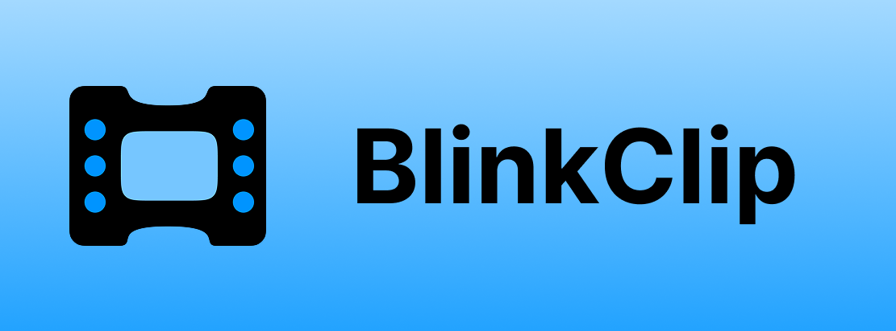
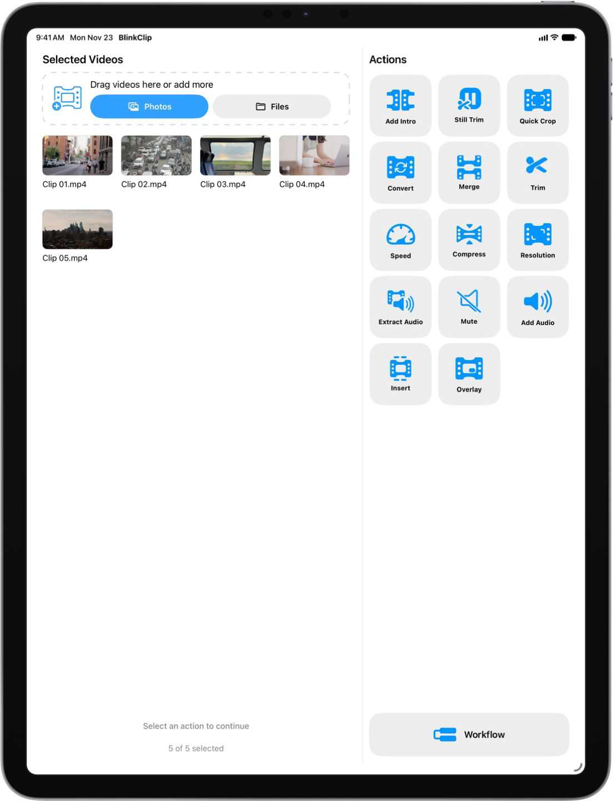

Small repeated tasks add up.
Trimming, converting, adding intros or outros, cleaning up file prep, and handling similar exports again and again can take more time than they should. BlinkClip exists to reduce that repeated drag.
I created BlinkClip because repetitive video tasks kept feeling slower and more manual than they should, especially on a machine that should make this kind of workflow feel quick.
Edit without editing. Set up the job once and apply it across your clips.

Trimming, converting, adding intros or outros, cleaning up file prep, and handling similar exports again and again can take more time than they should. BlinkClip exists to reduce that repeated drag.
My interest in BlinkClip comes from the same product instinct behind many of my projects: if a repeated step feels annoying often enough, it is probably worth designing better.
I do not want BlinkClip to pretend to be everything. I want it to be a fast utility that earns its place by handling repeat work well.
Batch processing matters because repeated file-by-file work is exactly where routine media tasks start wasting time.
Conversion is one of the most common utility tasks, so it should feel direct instead of turning into a mini project.
Quick trimming should feel fast and obvious when you are working through large sets of clips or repeated exports.
Adding the same opening or ending steps over and over is exactly the kind of work I want BlinkClip to absorb.
If the work involves the same clean-up step across multiple clips, BlinkClip becomes more useful.
The target is not a giant studio pipeline. It is the person who wants repeated media work to feel lighter and more organized.
Use the Mac app, the browser workspace, or the native iPhone and iPad app. Tools and formats vary by edition.
BlinkClip gives BA a practical software direction alongside product design, hardware ideas, and device concepts like ActiView.
Download BlinkClip 1.2.1 for macOS or open BlinkClip Online.
Get BlinkClip 1.3.0 on the App Store. Requires iOS 17 or iPadOS 17 or later.
